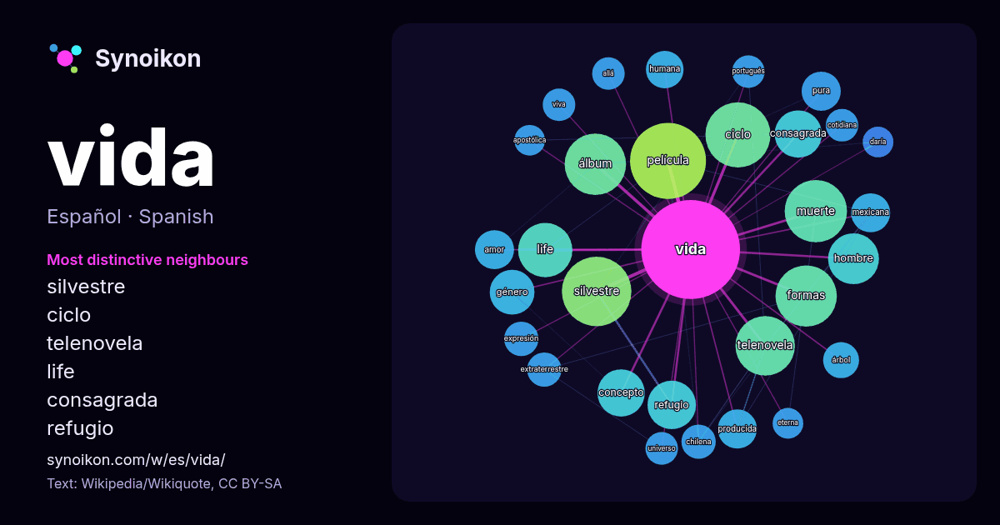

Español · palabra popular
vida
“life” · Las palabras encontradas a su alrededor en 1245 apariciones de Wikipedia, Wikiquote.

Vecinos más característicos
- silvestre 39×
- ciclo 30×
- telenovela 28×
- life 24×
- consagrada 20×
- refugio 19×
- película 16×
- muerte 15×
- concepto 14×
- pura 13×
- producida 12×
- álbum 11×
- mexicana 11×
- extraterrestre 11×
- humana 10×
- árbol 10×
- amor 10×
- cotidiana 9.6×
- chilena 9.6×
- viva 9.3×
× = cuántas veces más que en el texto general de Wikipedia.
Vecinos más frecuentes
- película 49
- silvestre 41
- ciclo 36
- muerte 33
- álbum 32
- formas 32
- telenovela 30
- life 25
- serie 23
- hombre 22
- refugio 20
- concepto 19
- consagrada 19
- género 17
- historia 17
- argentina 15
- español 15
- título 15
- estilo 14
- amor 13
En contexto
- La vida (del latín: vita) es un concepto difícil de definir, pues depende del enfoque con que se estudie, pero en general es la propiedad que distingue Wikipedia snippets · Vida
- La esperanza de vida o expectativa de vida es la media de la cantidad de años que vive una determinada población absoluta o total en un cierto período Wikipedia snippets · Esperanza de vida
- El Dicasterio para los Institutos de Vida Consagrada y las Sociedades de Vida Apostólica (Dicasterium pro Institutis Vitae Consecratae et Societatibus Wikipedia snippets · Dicasterio para los Institutos de Vida Consagrada y las Sociedades de Vida Apostólica
- Los términos vida silvestre y vida salvaje se refieren a plantas, animales, hongos y otros organismos salvajes que habitan un lugar sin haber sido introducidos Wikipedia snippets · Vida silvestre
- El estilo de vida es un concepto sociológico y psicológico que representa un perfil de pensamiento y acción de un individuo o de un conjunto de individuos Wikipedia snippets · Estilo de vida
- término vida extraterrestre se refiere al hipotético tipo de vida que puede existir fuera del planeta Tierra y que no se haya originado en él. Tal vida puede Wikipedia snippets · Vida extraterrestre
- Una sociedad de vida apostólica es una comunidad perteneciente a la Iglesia católica que puede estar compuesta por fieles laicos o clérigos que buscan Wikipedia snippets · Sociedad de vida apostólica
- La vida media es el promedio de vida de un núcleo o de una partícula subatómica libre antes de desintegrarse. Se representa con la letra griega τ {\displaystyle Wikipedia snippets · Vida media
Más palabras
- agua
- arte
- bosque
- caballo
- camino
- campana
- canción
- ciencia
- ciudad
- clima
- comida
- corazón
- desierto
- dinero
- dios
- espejo
- estrella
- familia
- fuerza
- gato
- historia
- invierno
- isla
- jardín
- lengua
- lluvia
- madre
- mapa
- miel
- montaña
- muerte
- naturaleza
- oro
- otoño
- pan
- perro
- puente
- reloj
- sal
- salud
- silencio
- sombra
- tiempo
- tormenta
- trabajo
- tren
- té
- verano
- verdad
Precalculado el 2026-10-09 con los ajustes predeterminados (±5 palabras, corpus mediano). El mapa interactivo puede actualizarlo con datos en vivo.
Interfaz traducida automáticamente; se agradecen correcciones.